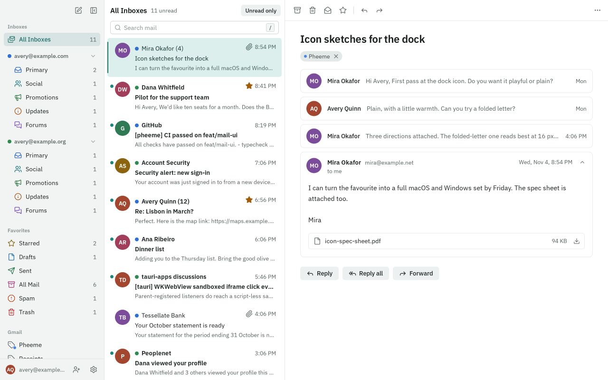

Seven focused improvements to make Pheeme easier to read, navigate, and act on. Compare
the actual app before and after.
The same 40-check rubric
78→98/100
Before → after · on rubric v1+20 points
Target ≥95 reached
See the difference.
Same scenes. Same window sizes.

BEFOREAFTER
Show afterShow before
The inbox keeps its three-pane layout. Sender names replace initial avatars, compact
checkboxes stay visible, and message text grows from 14px to 16px. New message, Select
all, and the owning account are easy to find.
Five binary checks per category. Each check earns the category’s weight divided by five,
or zero. Every original pass condition is preserved below. Passing this checklist reaches
100; it does not mean every possible design problem has been solved.
BeforeAfterBars show share of category points.
Hierarchy & scanning12 → 15 / 15
Typography & contrast6 → 15 / 15
Action discoverability9 → 15 / 15
Visual consistency10 → 10 / 10
Feedback & recovery15 → 15 / 15
Keyboard & semantics10 → 10 / 10
Window layout & targets8 → 10 / 10
Onboarding clarity8 → 8 / 10
Hierarchy & scanning · 15 points 12 → 15
H1
The active mailbox has a filled row or non-color marker, and the list header
names that mailbox. PASS → PASS
Before: Browser: Primary and All Inboxes have selected row fills and
matching headers.
After: Browser: Primary and All Inboxes have selected row fills and
matching headers.
H2
Unread conversations use both a non-color type change and an unread marker.
PASS → PASS
Before: Browser + source: unread sender/subject use weight 600 plus a
dot; read rows use regular weight.
After: Browser + source: unread sender/subject use weight 600 plus a dot;
read rows use regular weight.
H3
The open conversation subject is at least 1.4× the app-rendered message body
font size. PASS → PASS
Before: Browser: subject 22px; message body 14px; ratio 1.57.
After: Browser: the subject is 24px with standard 16px body text (1.5×);
Large uses 27px with 18px body text.
H4
Sidebar, list, and reader top toolbars share a height and top edge within 1 CSS
px. PASS → PASS
Before: Browser: all three start at y=0 and are 44px high.
After: Browser: all three start at y=0 and are 44px high.
H5
In All Inboxes, an incoming conversation's owning account email is visible
inside the reading pane without hover or opening compose.
FAIL → PASS
Before: Browser: Mira’s message shows mira@example.net and “to me”; the
owning avery@example.com address is absent from the reading pane. List account
dots require hover for the address.
After: Browser: avery@example.com is visible above the incoming subject
in All Inboxes, without hover.
Typography & contrast · 15 points 6 → 15
T1
Primary mailbox names and conversation sender/subject text are at least 13 CSS
px at 100% zoom. PASS → PASS
Before: Browser + tokens: primary labels and conversation text use 13px.
After: Browser + tokens: primary labels and conversation text use 13px.
T2
App-rendered plain-text reading and compose bodies default to at least 15 CSS px
with line-height at least 1.5. FAIL → PASS
Before: Browser + CSS: both bodies use 14px with line-height 1.6. Size
fails. Sender-supplied HTML mail is excluded.
After: Browser: default plain-text message and compose bodies are 16px
with line-height 1.6.
T3
Enabled section labels, helper text, metadata, and input placeholders have at
least 4.5:1 text/background contrast in both themes.
FAIL → PASS
Before: Browser + theme values: sidebar section labels are 2.82:1 in
light and 3.51:1 in dark. Search placeholder colors also fall below 4.5:1.
Decorative marks and disabled actions are excluded.
After: Theme values and regression tests: sidebar label contrast is
5.48:1 in light and 6.28:1 in dark. Search placeholders are 6.04:1 and 7.72:1.
Disabled controls have a separate dimmer token; muted text remains stronger than
subtle text in both themes.
T4
The fixture plain-text message wraps within its reader at both audit window
sizes without clipping or horizontal scrolling.
PASS → PASS
Before: Browser: Mira’s message fits the 680px reader at 1280px and wraps
inside the 400px reader at 900px.
After: Browser: the updated message wraps inside the 400px reader at
900×600; its text box has equal clientWidth and scrollWidth (334px). The
1280×800 view also fits.
T5
An in-app text-size setting or documented app zoom command can increase reading
and compose text to at least 18px. FAIL → PASS
Before: Source: Appearance exposes theme and sidebar only; the app
command registry has no text-size/zoom command. Browser or OS zoom alone does
not satisfy this chosen product requirement.
After: Browser: Appearance → Reading → Text size → Large changes both
reading and composing to 18px. A full reload restores the choice. Persistence
and invalid stored values have regression tests.
Action discoverability · 15 points 9 → 15
A1
New message is a persistent action with a visible text label in the expanded
sidebar. FAIL → PASS
Before: Browser: a 28×28px pen icon, named through aria-label and a hover
tooltip, is the only sidebar compose action.
After: Browser: a full-width text-labeled New message button is
persistent under the window toolbar; the compose shortcut remains available.
A2
Mail search and settings can each be reached with one click from the expanded
shell. PASS → PASS
Before: Browser: visible search field and footer Settings button.
After: Browser: visible search field and footer Settings button.
A3
An open conversation offers visible text-labeled Reply, Reply all, and Forward
actions. PASS → PASS
Before: Browser: all three appear below the conversation and are
reachable by reader scrolling.
After: Browser: all three appear below the conversation and are reachable
by reader scrolling.
A4
Every icon-only button in the shell's top toolbars has an accessible name
and a text tooltip. PASS → PASS
Before: Browser + IconButton.tsx: New message, sidebar toggle, Archive,
Delete, read state, Star, Reply, Forward, and More actions have aria-label and
title.
After: Browser + IconButton.tsx: New message, sidebar toggle, Archive,
Delete, read state, Star, Reply, Forward, and More actions have aria-label and
title.
A5
Before hover or an existing selection, the inbox shows a checkbox, Select
action, or visible instruction explaining batch selection.
FAIL → PASS
Before: Browser + ThreadRow.tsx: avatars turn into checkboxes on hover or
once a row is checked; no persistent Select affordance is shown. The palette
exposes the shortcut but requires discovery.
After: Browser: Select all is visible before hover. Clicking it selects
all 22 loaded fixture conversations and announces 22 selected; Clear selection
reverses it.
Visual consistency · 10 points 10 → 10
C1
App chrome uses one bundled font family across shell, compose, settings, and
onboarding; keycaps/code and sender HTML are exempt.
PASS → PASS
Before: Source + browser: shared IBM Plex Sans Variable family.
After: Source + browser: shared IBM Plex Sans Variable family.
C2
The repository's design-token check passes for the audited checkout.
PASS → PASS
Before: Command: npm run lint:tokens exited 0.
After: npm run lint passes, including the design-token guard.
C3
Shell, settings, onboarding, and compose use the shared Button/IconButton
components for their standard actions. PASS → PASS
Before: Source: shared component imports and consistent rendered button
styles.
After: Source: shared component imports and consistent rendered button
styles.
C4
Standard chrome icons come from one family and use shared size/stroke tokens.
PASS → PASS
Before: Source + browser: Lucide, 14px/16px icon sizes and 1.75 stroke
token; brand art excluded.
After: Source + browser: Lucide, 14px/16px icon sizes and 1.75 stroke
token; brand art excluded.
C5
Switching light/dark changes the same shell and settings surfaces without
changing component geometry. PASS → PASS
Before: Browser + theme implementation: common CSS geometry with theme
color tokens; theme change observed in settings and reader.
After: Browser + theme implementation: common CSS geometry with theme
color tokens; theme change observed in settings and reader.
Feedback & recovery · 15 points 15 → 15
F1
Archiving a fixture conversation shows a confirmation with Undo; Undo restores
that conversation to the inbox. PASS → PASS
Before: Browser: “Archived / Undo” appeared; Undo restored “Icon sketches
for the dock”.
After: Browser after changes: Archived / Undo appeared; Undo restored
Icon sketches for the dock to the inbox.
F2
Editing a valid fixture draft results in a visible saved confirmation without
closing compose. PASS → PASS
Before: Browser: a valid recipient plus scratch subject produced “Draft
saved” in the compose footer.
After: Browser after changes: the valid audit draft showed Draft saved in
the compose footer.
F3
Trying to send an invalid recipient keeps compose open and shows an inline error
identifying the invalid value. PASS → PASS
Before: Browser: invalid-address produced ““invalid-address” isn't
an email address.” below the editor.
After: Browser after changes: invalid-address kept compose open and
produced an inline error naming the invalid address.
F4
A search with no matches shows an explicit empty result and a one-click clear
action that returns to mail. PASS → PASS
Before: Browser: zzzz-no-match-ui-audit yielded “No conversations match
your search.”; Clear search returned the inbox.
After: Browser after changes: an unmatched query shows No conversations
match your search; Clear search returns to mail.
F5
Mail list and reader load-error UI provides an error message and a retry action
for recoverable failures. PASS → PASS
Before: Source: ThreadList.tsx and ThreadView.tsx render error text and
Try again controls. Native/network failure behavior was not exercised.
After: Source: ThreadList.tsx and ThreadView.tsx render error text and
Try again controls. Native/network failure behavior was not exercised.
Keyboard & semantics · 10 points 10 → 10
K1
Tab navigation shows a focus indicator at least 2 CSS px wide on the sampled
settings switch. PASS → PASS
Before: Browser: the Show sidebar switch had a 2px solid teal outline
after Tab.
After: Browser after changes: the sampled Show sidebar switch has a 2px
solid focus outline after Tab.
K2
Ctrl/Cmd+K opens a command palette and moves keyboard focus to its command
input; Escape dismisses it. PASS → PASS
Before: Browser: Ctrl+K opened the command list with the combobox
focused; Escape dismissed it.
After: Browser after changes: Ctrl+K opens the command palette and
focuses its combobox; Escape dismisses it.
K3
A focused conversation list supports arrow navigation, Enter to open, and X to
toggle selection. PASS → PASS
Before: Browser: ArrowDown + Enter opened “Keyboard map feedback”; X
marked that option aria-selected=true.
After: Browser after changes: ArrowDown + Enter opened Dinner list; X
marked the focused option selected.
K4
Settings keeps Tab/Shift+Tab inside its dialog and restores the invoking
button's focus on Escape. PASS → PASS
Before: Browser + source: initial Shift+Tab stayed in the dialog; Escape
restored Settings focus; the trap wraps first/last controls.
After: Browser after changes: Tab wraps inside Settings and Escape
restores focus to the invoking Settings button. The existing Shift+Tab trap
remains in source and tests.
K5
The audited shell has named sidebar/list/reader landmarks, named controls, and
associated labels for compose To/Subject/Message.
PASS → PASS
Before: Accessibility tree + source: Mailboxes, Conversations, Reading
pane, IconButton names, recipient aria-label, Subject label htmlFor, and Message
editor aria-label. This is not a full screen-reader audit.
After: Accessibility tree + source: Mailboxes, Conversations, Reading
pane, IconButton names, recipient aria-label, Subject label htmlFor, and Message
editor aria-label. This is not a full screen-reader audit.
Window layout & targets · 10 points 8 → 10
R1
At the supported 900×600 minimum, sidebar/list/reader stay inside the viewport
without overlapping. PASS → PASS
After: Browser after changes: the compose panel fits at 900×600 with Send
inside the viewport, including Large text.
R4
The mailbox list has its own vertical scrolling while account/settings controls
remain anchored in the footer. PASS → PASS
Before: Browser + shell CSS: sidebar scroll region above the fixed
footer; long account/category/label navigation is contained independently.
After: Browser + shell CSS: sidebar scroll region above the fixed footer;
long account/category/label navigation is contained independently.
R5
Secondary action buttons in the sampled reader and compose are at least 24×24
CSS px. FAIL → PASS
Before: Browser: Remove label and Collapse message are 18×18px. This is a
fixed ergonomic target, not a claim of a WCAG violation; spacing exceptions are
not evaluated here.
After: Browser: every visible reader and compose action button in the
sample is at least 24×24px. Label removal, message collapse, recipient
edit/removal, attachment removal, and quote toggles use the shared minimum.
Onboarding clarity · 10 points 8 → 8
O1
Before setup starts, the UI states the Google Cloud prerequisite, expected time,
and cost. PASS → PASS
Before: Browser: welcome explains ownership, about 15 minutes, and no
cost.
After: Browser: welcome explains ownership, about 15 minutes, and no
cost.
O2
Setup shows a numbered current step, offers backward navigation after the first
step, and persists progress for resume.
PASS → PASS
Before: Browser: 11-step rail, current-step styling, Back/Next on project
step. Source: progress.ts and Onboarding.tsx save and restore the step.
After: Browser and source: the original 11 numbered setup steps are
retained, with Back and progress persistence unchanged.
O3
Steps requiring fixed console values offer a copy control and a direct link to
the relevant console page. PASS → PASS
Before: Browser: project step provides Open New Project and Copy. Source:
steps.ts and shared guide render fixed-value copy fields and console links.
After: Browser: project step provides Open New Project and Copy. Source:
steps.ts and shared guide render fixed-value copy fields and console links.
O4
The credentials step uses visible field labels, masks the secret, and renders
inline validation for malformed client IDs/JSON.
PASS → PASS
Before: Source: Credentials in Onboarding.tsx renders Client ID/Client
secret labels, password input, and field error text.
After: Source: Credentials in Onboarding.tsx renders Client ID/Client
secret labels, password input, and field error text.
O5
The default setup path contains no required Next step solely for an unreleased
feature. FAIL → FAIL
Before: Source + rail: Enable Calendar API is the fourth step; its copy
says Calendar is coming. Make that step optional or defer it until Calendar is
used.
After: FAIL intentionally: Calendar API preparation is retained as
required by the design spec (§4 and §8, decided by Alex). This original
criterion conflicts with that decision and remains a two-point deduction.
Built and checked.
The reviewed refresh passed all 584 tests. After removing sender avatars on 05 Nov, type
checking, lint, the production build, and 46 mail-list and reader tests pass; browser
checks confirm checkbox selection and the updated captures. Browser checks cover the new
actions, persisted text size, both themes, keyboard navigation, draft validation,
archive/undo, and the supported 900×600 minimum.
These are real screenshots of the working app with fixture mail, captured before and after
the code changes. Desktop captures use 1280×800; Small window uses 900×600. Fixture
timestamps can differ slightly. The audit combines browser checks with source inspection
as recorded per criterion. Native Gmail/OAuth integrations, OS-specific appearance, and a
full screen-reader audit remain outside its scope.